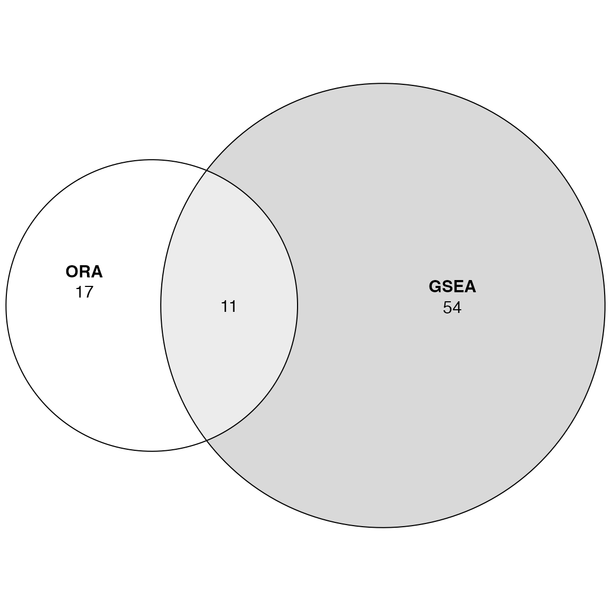
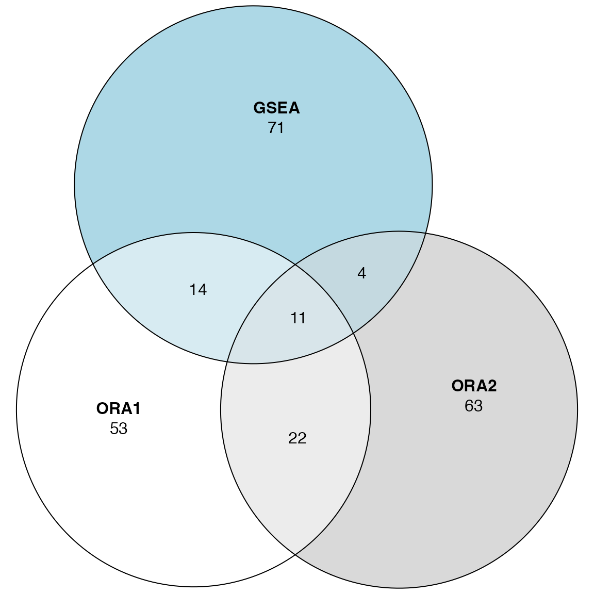
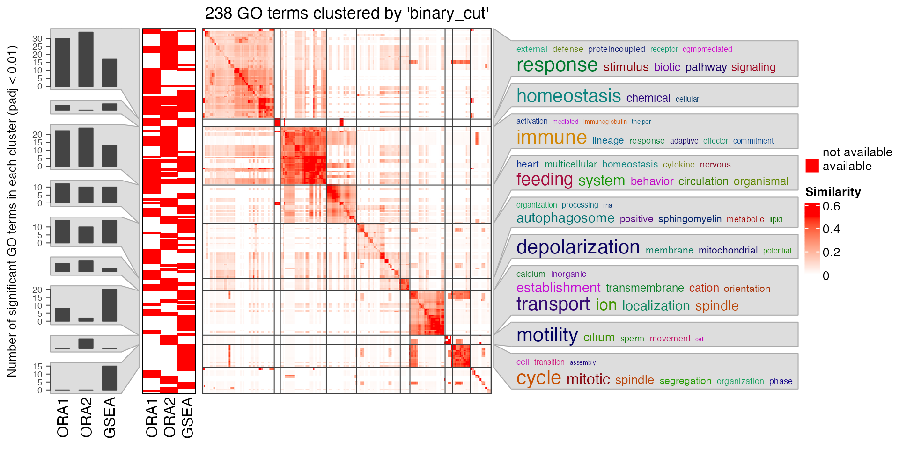

Topic 2-05: Compare ORA and GSEA
Zuguang Gu z.gu@dkfz.de
2025-05-31
Source:vignettes/topic2_05_compare_ORA_GSEA.Rmd
topic2_05_compare_ORA_GSEA.RmdThere are ORA and GSEA for gene set analysis. A natural question is which one performs better? We apply ORA and GSEA on the same p53 dataset and compare the results.
library(GSEAtopics)
data(p53_dataset)
expr = p53_dataset$expr
condition = p53_dataset$condition
gs = p53_dataset$gs
s = p53_dataset$s2nORA
We need to perform t-test or similar DE test to extract DE genes:
We apply t-tests:
library(genefilter)
tdf = rowttests(expr, condition)
tdf$fdr = p.adjust(tdf$p.value, "BH")
sum(tdf$fdr < 0.05)## [1] 2It seems there are very few DE genes. We look at the distribution of the t-statistics:
Instead of setting a cutoff for FDR, we set a cutoff for t-statistics, just to get enough number of DE genes.
## [1] 728First we perform ORA using the original C2 gene sets. In the
following code, we explicitly set universe to the total
genes in the experiment, as we want to make the “universe genes” the
same in both ORA and GSEA analysis.
GSEA
Next we perform GSEA using signal-to-noise ratios as gene scores.
tb_gsea = fgsea_wrapper(s, gs)Comparison
We compare the two significant GO lists:
library(eulerr)
plot(euler(list(ORA = tb_ora$gene_set[tb_ora$p_value < 0.05],
GSEA = tb_gsea$gene_set[tb_gsea$p_value < 0.05])
), quantities = TRUE)
And we compare the p-values and fold enrichment from the two methods:
rownames(tb_ora) = tb_ora$gene_set
rownames(tb_gsea) = tb_gsea$gene_set
cn = intersect(rownames(tb_ora), rownames(tb_gsea))
par(mfrow = c(1, 2))
plot(tb_ora[cn, "p_value"], tb_gsea[cn, "p_value"])
plot(tb_ora[cn, "log2fe"], log2(abs(tb_gsea[cn, "nes"])))So we would say in general, ORA and GSEA are not comparible as they correspond to two different tests answering different questions.
However, they might agree very well for top-significant gene sets:
head(tb_ora)## gene_set n_hits n_genes n_gs n_total log2fe
## P53_UP P53_UP 9 728 40 10100 1.642270
## SA_G1_AND_S_PHASES SA_G1_AND_S_PHASES 5 728 14 10100 2.308846
## hsp27Pathway hsp27Pathway 5 728 15 10100 2.209311
## SA_DAG1 SA_DAG1 4 728 10 10100 2.472345
## p53Pathway p53Pathway 5 728 16 10100 2.116201
## gsPathway gsPathway 3 728 6 10100 2.794273
## z_score p_value p_adjust
## P53_UP 3.746936 0.001795847 0.4290736
## SA_G1_AND_S_PHASES 4.126911 0.002219247 0.4290736
## hsp27Pathway 3.915160 0.003133458 0.4290736
## SA_DAG1 4.011457 0.003955237 0.4290736
## p53Pathway 3.721297 0.004290736 0.4290736
## gsPathway 4.054022 0.006323397 0.5269497
head(tb_gsea)## gene_set p_value
## P53_UP P53_UP 4.227646e-06
## hsp27Pathway hsp27Pathway 7.768208e-06
## HTERT_UP HTERT_UP 4.256855e-05
## GPCRs_Class_A_Rhodopsin-like GPCRs_Class_A_Rhodopsin-like 5.045670e-05
## p53hypoxiaPathway p53hypoxiaPathway 5.403876e-05
## p53Pathway p53Pathway 5.835367e-05
## p_adjust log2_p_err es nes n_gs
## P53_UP 0.001910979 0.6105269 -0.5986774 -2.130912 40
## hsp27Pathway 0.001910979 0.5933255 -0.7758925 -2.170911 15
## HTERT_UP 0.004785001 0.5573322 0.3709129 1.859947 109
## GPCRs_Class_A_Rhodopsin-like 0.004785001 0.5573322 -0.4299558 -1.843462 111
## p53hypoxiaPathway 0.004785001 0.5573322 -0.6816006 -2.045472 20
## p53Pathway 0.004785001 0.5573322 -0.7438596 -2.128121 16
## leading_edge
## P53_UP CDKN1A, ....
## hsp27Pathway TNFRSF6,....
## HTERT_UP AHR, DR1....
## GPCRs_Class_A_Rhodopsin-like NTSR2, A....
## p53hypoxiaPathway CDKN1A, ....
## p53Pathway CDKN1A, ....Next let’s use a larger gene set collection, the GO BP gene sets. To
use the ora_go() and fgsea_go() helper
functions, we need to convert genes all to EntreZ IDs.
We also do ORA using the default universe and all genes in the experiment as universe. Note the p53 dataset is very old and the total number of genes in the experiment is quite small.
tb_ora1 = ora_go(convert_to_entrez(diff))## gene id might be SYMBOL (p = 0.680 )
tb_ora2 = ora_go(convert_to_entrez(diff), universe = convert_to_entrez(rownames(expr)))## gene id might be SYMBOL (p = 0.690 )## gene id might be SYMBOL (p = 0.730 )
tb_gsea = fgsea_go(convert_to_entrez(s))## gene id might be SYMBOL (p = 0.640 )
lt_GO = list(ORA1 = tb_ora1$gene_set[order(tb_ora1$p_value)[1:100]],
ORA2 = tb_ora2$gene_set[order(tb_ora2$p_value)[1:100]],
GSEA = tb_gsea$gene_set[order(tb_gsea$p_value)[1:100]])
plot(euler(lt_GO), quantities = TRUE)
The agreement on individual is so bad, even for two ORA settings.
Although there are big inconsistency between different settings, but note GO has a hierarchical semantic relations, the following plot shows the general biological functions are very consistent for the three methods.
